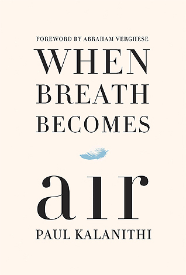

In 1942, with the Nazis occupying Holland, a thirteen-year-old Jewish girl and
her family fled their home in Amsterdam and went into hiding. For the next two years, until
their whereabouts were betrayed to the Gestapo, the Franks and another family lived cloistered
in the “Secret Annexe” of an old office building. Cut off from the outside world, they faced
hunger, boredom, the constant cruelties of living in confined quarters, and the ever-present
threat of discovery and death. In her diary Anne Frank recorded vivid impressions of her
experiences during this period. By turns thoughtful, moving, and surprisingly humorous, her
account offers a fascinating commentary on human courage and frailty and a compelling
self-portrait of a sensitive and spirited young woman whose promise was tragically cut short.

When Breath Becomes Air
Author: Paul Kalanithi
Originally published: September 1, 2005
For readers of Atul Gawande, Andrew Solomon, and Anne Lamott, a profoundly
moving, exquisitely observed memoir by a young neurosurgeon faced with a terminal cancer
diagnosis who attempts to answer the question 'What makes a life worth living?'
At the age of thirty-six, on the verge of completing a decade's worth of training as a
neurosurgeon, Paul Kalanithi was diagnosed with stage IV lung cancer. One day he was a
doctor treating the dying, and the next he was a patient struggling to live. And just
like that, the future he and his wife had imagined evaporated.
A Brief History of Time
Author: Stephen Hawkings
Originally published: April 1, 1988
In the ten years since its publication in 1988, Stephen Hawking's classic work has become a landmark volume in scientific writing, with more than nine million copies in forty languages sold worldwide. That edition was on the cutting edge of what was then known about the origins and nature of the universe. But the intervening years have seen extraordinary advances in the technology of observing both the micro- and the macrocosmic worlds. These observations have confirmed many of Professor Hawking's theoretical predictions in the first edition of his book, including the recent discoveries of the Cosmic Background Explorer satellite (COBE), which probed back in time to within 300,000 years of the universe's beginning and revealed wrinkles in the fabric of space-time that he had projected.
Night
Author: Elie Wiesel
Originally published: 1956
Born in the town of Sighet, Transylvania, Elie Wiesel was a teenager when he and his family were taken from their home in 1944 to Auschwitz concentration camp, and then to Buchenwald. Night is the terrifying record of Elie Wiesel's memories of the death of his family, the death of his own innocence, and his despair as a deeply observant Jew confronting the absolute evil of man. This new translation by his wife and most frequent translator, Marion Wiesel, corrects important details and presents the most accurate rendering in English of Elie Wiesel's testimony to what happened in the camps and of his unforgettable message that this horror must simply never be allowed to happen again.